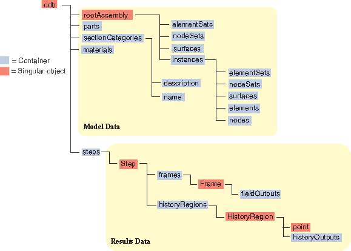

Post Processing
Exploring the ODB
The odb file is database filr with the following folder structure. You can query the values from the odb files as attributes of a python class.
{kind=link}
Example Script
The script below presents a piece of code that extracts the Element Labels and Effective Axial Force from the job.odb file.
from odbAccess import openOdb
odb = openOdb("job.odb")
section = odb.rootAssembly.instances["PART-1-1"].elementSets["CP_B_ELS"]
arr = odb.steps["Step-18"].frames[-1].fieldOutputs["ESF1"].getSubset(region=section).values
elabel, esf = zip(*[[_.elementLabel, _.data] for _ in arr])
The second piece of code save the elabel and esf variables into a csv file
import csv
file = open("esf.csv", mode='w')
writer = csv.writer(file, delimiter=',', lineterminator='\n')
writer.writerow(["ELEMENT_LABEL", "ESF"])
writer.writerows(zip(*[elabel, esf]))
file.close()
The two scripts taken together extracts and saves the chosen field outputs into a csv file.
Breaking down the script
from odbAccess import openOdbThis imports the function odbAccess form the list of core abaqus functions. This is the only function we would need from Abaqus.odb = openOdb("job.odb")assigns the opened odb file to an object odb. Python then uses this object to filter and extract field outputs.section = odb.rootAssembly.instances["PART-1-1"].elementSets["CP_B_ELS"]We filter the part and element set as a separate section that we would use for extracting outputs.arr = odb.steps["Step-18"].frames[-1].fieldOutputs["ESF1"].getSubset(region=section) .valuesThis code extracts the step, frame and field output based on the section specified above. We assign the list of values to the variable arr.elabel, esf = zip(*[[_.elementLabel, _.data] for _ in arr])In this last step, we extract element labels and effective axial force and assign them to the variables elabel and esf.
Importing Functions
Since these operations are frequently used in post processing, It would be highly efficient to develop functions that can be called upon when extracting the outputs. Writing the post processing scripts in an importable module way keeps the code concise, readable and easy to QA.
Extracting Field Output
The code snippet below extracts the ESF using get_ESF() function and prints the result in the terminal.
from fastfea.abaqus.odbreader import *
c1 = Case()
c1.odb_file = r"c:\path\job.odb"
c1.step = "LOAD"
c1.frame = -1
c1.part = "PART-1-1"
c1.elset = "PIPELINE"
c1.ESF = get_ESF(**c1)
print(c1.ESF)
Simillarly other functions such as get_SM(), get_S(), get_lcc_params() can be used. Please see odbreader module for the list of functions available.
Exporting Results
The code snippet below extracts Element Labels, Effective Axial Force and Bending Moment. Saves them to file lcc.csv.
from fastfea.abaqus.odbreader import *
c1 = Case()
c1.odb_file = r"c:\path\job.odb"
c1.step = "LOAD"
c1.frame = -1
c1.part = "PART-1-1"
c1.elset = "PIPELINE"
c1.ESF = get_ESF(**c1)
c1.SM = get_SM(**c1)
c1.label = get_el_labels(**c1)
write_csv(
filename="lcc.csv",
header=["LABEL", "ESF1", "BM"],
values=[c1.label, c1.ESF, c1.SM.BM],
)
Passing Data between Functions
The code snippet below extracts extracts the frame number associated with largest bending moment and passes on to the get_lcc_params() function. It then prints out the frame number, element label, esf and bm.
from fastfea.abaqus.odbreader import *
c1 = Case()
c1.odb_file = r"c:\path\job.odb"
c1.step = "LOAD"
c1.part = "PART-1-1"
c1.elset = "PIPELINE"
c1.frame = get_maxbm_frame(**c1)
c1.lcc = get_lcc_params(**c1)
print("Frame: {}".format(c1.frame))
print("Label: {}".format(c1.lcc.label))
print("BM: {}kN.m".format(round(c1.lcc.bm / 1000, 2)))
print("ESF: {}kN".format(round(c1.lcc.esf / 1000, 2)))
Adding Cases
Multiple cases can be added to the same python file by using Case.clone() method.
from fastfea.abaqus.odbreader import *
c1 = Case()
c1.odb_file = r"c:\path\job.odb"
c1.step = "LOAD"
c1.frame = 0
c1.part = "PART-1-1"
c1.elset = "PIPELINE"
c1.ESF = get_ESF(**c1)
print(c1.ESF)
c2 = c1.clone()
c2.frame = 1
c2.ESF = get_ESF(**c2)
print(c2.ESF)